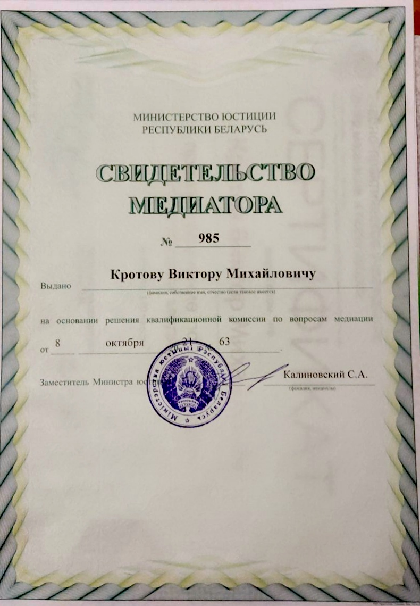
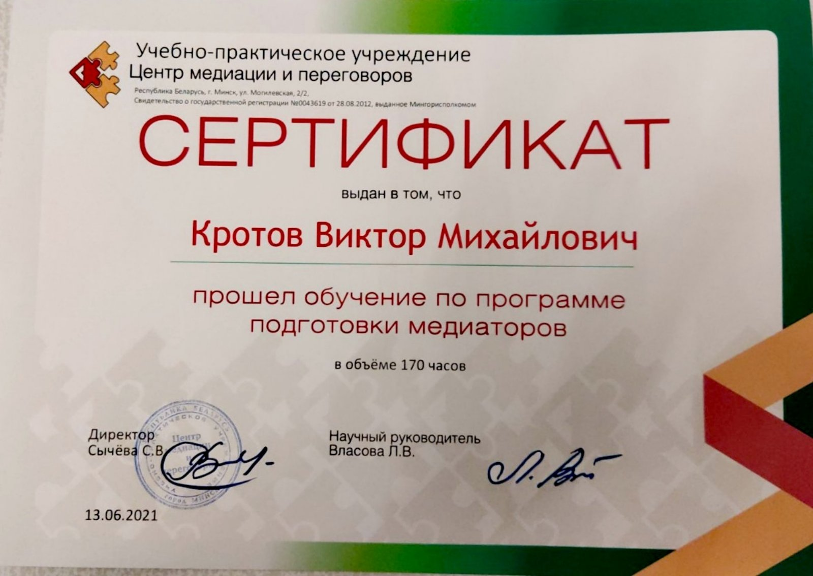

Медиация - создана для всех, помогает многим.

Бывает так,что у сторон возникает спор (или конфликт интересов) в коммерческих делах,семейных и трудовых отношениях и т.д.
Стороны (или одна сторона) предъявляют претензию, получают ответ, который их не устраивает
(полностью или частично).И далее наступает ситуация, практически патовая, когда одна
(или две стороны) отказывается выполнять требования к ним,в то же время изменять свои также не желают.
Причём, нежелание выполнять требования нередко имеет психологические, межличностные причины, с точки
зрения закона требования могут быть довольно обоснованы. Сторонам спора может,в одних ситуациях,
мешать инерционность мышления, когда решение принято ,как окончательное. И принято нередко на
эмоциях ,без особых обсуждений. В других ситуациях имеется недостаток коммуникативных навыков или
присутствует психологический барьер, мешающий начать конструктивные переговоры. Переговоры, в
которых стороны могли бы преодолеть как инерционность мышления, так и психологическую отчуждённость.
Медиация является тем инструментом, который помогает сторонам найти решение в подобных ситуациях.
Медиация – это альтернативный традиционному судебному способ урегулирования конфликтов и,
по сути, представляет собой переговоры спорящих сторон с участием независимого лица –
медиатора – в целях выработки взаимоприемлемого решения. Причем, такое решение принимают
сами стороны, а медиатор создает для этого условия.
Медиатор — человек с высшим образованием, который прошел специальное обучение и действует
на основании Свидетельства медиатора, выданного Министерством юстиции РБ. Он
организовывает и проводит переговоры. Медиатор получает вознаграждение, определяемое по
соглашению с участниками спора.
Медиация в Республике Беларусь развивается на основе эффективной законодательной базы.
Так, в 2013 году был принят Закон Республики Беларусь «О медиации», который установил
организационные и правовые условия осуществления медиации. Подробнее можно ознакомиться
на сайте Министерства юстиции.
Подготовка и проведение медиации.
Вас заинтересовал данный способ переговоров и вы заполняете форму обратной связи или
набираете по контактному номеру, чтобы получить бесплатную консультацию у медиатора.
Как правило, медиатору достаточно 10-15 минут, чтобы вникнуть в суть вашего вопроса и
определить перспективу его разрешения при помощи медиации.При положительном результате
согласовывается способ уведомления другой стороны (если стороны об этом ещё не
договорились) и порядок проведения информационной встречи для сторон.
В ходе информационной встречи медиатор уточняет необходимую информацию, более подробно
объясняет порядок и условия проведения медиации. При заинтересованности в которой стороны
подписывают соглашение о применении медиации. С данного момента срок течения исковой
давности приостанавливается и на проведение медиации отводится не более шести месяцев.
После проведения информационной встречи стороны, при необходимости, консультируются
у специалистов, проводят экспертизы, получают необходимые документы. Далее, в
согласованный день, участники медиации встречаются для проведения переговоров.
Переговоры проходят в виде медиативной сессии (длительностью ,как правило, до 3-х часов), в ходе которой :
- - Каждый участник спора рассказывает своё видение ситуации и что он
хочет обсудить.
- - Формируется Круг вопросов которые хотят обсудить стороны.
- - Проходит обсуждение вопросов, где каждый может высказывать
свое мнение, предлагать варианты решений,
оценивать реалистичности их исполнения.
- - Возможно проведение индивидуальных бесед с медиатором по его инициативе или по желанию любой из сторон.
В результате стороны могут:
- — договориться полностью и подписать медиативное соглашение;
- — отказаться от дальнейших переговоров;
- — договориться частично и согласовать проведение ещё одной медиативной сессии;
В 1-м и 2-м случае медиация считается завершенной.
Медиативное соглашение выполняется добровольно, в случаях
соответствия его мировому соглашению возможно принудительное исполнение.
Контакты
Меня зовут Виктор Кротов, я медиатор (впрочем, человек в первую очередь),помогаю в переговорах находить решение спорных ситуаций. Получил высшее экономическое образование, в то же время меня всегда интересовала психология, существование человека как личности, философские вопросы. “Поступай с другими так, как хочешь, чтобы поступали с тобою” считаю одним из самых лучших высказываний.
В школе занимался греблей на байдарках,а в студенческие годы начал заниматься единоборствами, продолжаю до настоящего времени (бразильское джиу-джитсу, грэпплинг).
Медиация увлекла меня в 2017 году, когда я увидел в ней и новые возможности для разрешения конфликтов и споров, и ту деятельность, которая была бы мне интересна.
Считаю,что медиация предоставляет возможность сторонам помимо разрешения самого спора, также приобрести спокойствие и определённость в отношениях.
Для получения консультации воспользуйтесь формой обратной связи или звоните по тел. +375292611850

